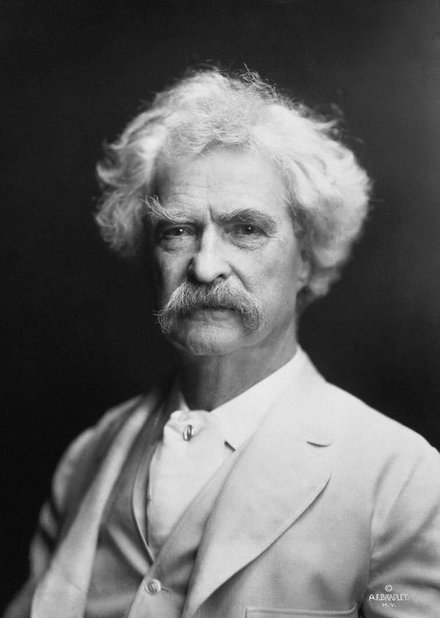

Settimana 5
Quanto bisogna aspettare?
Geometrica Lezione 1 mercoledì 21 ottobre
Resta proiettata durante l'ingresso. Si passa subito al riepilogo della Settimana 4, poi al 53 di Venezia. La varianza apre la Lezione 2.
Riepilogo · Settimana 4
Quattro domande da venerdì
1 $\mathbb{E}[X]$: che cosa misura?
2 Il dado dà 3,5?
3 $\mathbb{E}[X+Y]$ senza indipendenza?
4 Binomiale: ipotesi e media?
risposte alla lavagna
Una domanda per click: chiedi, attendi una risposta dalla classe, poi la scrivi alla lavagna. Risposte: (1) il baricentro dei valori pesati dalla PMF; (2) no, la media può essere un valore impossibile; (3) sì, la linearità non chiede indipendenza; (4) n prove, stesso p, indipendenti; media np. Otto minuti in tutto.
Atto I · Il 53 che non usciva
Click: 1 il contatore sale fino a 182; 2 «182 estrazioni senza il 53»; 3 la domanda. Racconta in un minuto i giocatori che aumentavano le puntate a ogni estrazione e il dibattito in Parlamento. Niente cifre su vittime o date non verificate (guida §3). Poi 5/90 alla lavagna.
Atto I · Una probabilità per estrazione
90 numeri, 5 estratti
$$P(53\ \text{estratto})=\frac{5}{90}=\color{#38ef7d}{\frac{1}{18}}$$
a ogni estrazione, da capo
Prima chiedi «quanto vale?». Click: 1 le 90 palline si mescolano e le prime 5 della fila finiscono negli estratti; argomento «5 posizioni su 90»; 2 la formula; 3 «da capo»: le palline tornano nell'urna, estrazioni indipendenti. Lancia subito s05-1 (slide successiva).
Sondaggio · la risposta arriva a fine lezione
Il 53 manca da 100 estrazioni .
1 più di 1/182 esattamente 1/183 meno di 1/184 dipende da quante volte è uscito prima
Inquadra il QR · voto anonimo, uno per telefono
«Votate ora, la risposta arriva a fine lezione.» NON premere V: si rivela all'104′ sul duplicato dopo «I 100 fallimenti spariscono». Risposta 2. L'1 è la fallacia del giocatore; il 3 la stessa fallacia rovesciata («numero sfortunato»); il 4 confonde le frequenze passate con la probabilità del meccanismo.
Atto II · Il modello
Lancia finché esce testa
X = numero del lancio in cui esce la prima testa. Prima di ogni click chiedi il valore di X. Click 1–3: le tre righe; 4: «1, 2, 3, … senza tetto»: infiniti valori, ma elencabili, quindi X resta discreta. Ipotesi: stesso p, prove indipendenti, come la Binomiale; cambia che cosa contiamo. Convenzione del corso: X conta anche la prova riuscita (parte da 1).
Atto II · La PMF
$X=4$: una sola storia
$$P(X=4)=(1-p)(1-p)(1-p)\,\color{#38ef7d}{p}=(1-p)^3\color{#38ef7d}{p}$$
$k-1$ fallimenti , 1 successo
Click 1–3: le tre caselle «fallisce» con il loro 1 − p; 4: la casella verde con p; 5: il prodotto, per indipendenza; 6: la formula generale. Prima del click 6 fai dire alla classe l'esponente: k − 1, non k. Controllo: k = 1 dà p. Click 7: la nota. La fila resta alla lavagna per tutta la lezione.
Il valore più probabile
Il Lotto: $P(X=k)$ con $p=1/18$
Sacrificabile (47–51). Chiedi «qual è il singolo valore più probabile?». Click: 1 la prima barra: 1/18 ≈ 0,056; 2 ogni barra è la precedente × 17/18. Anche quando il successo è raro, il primo tentativo ha più peso di ogni altro singolo valore; il peso totale si distribuisce su una coda lunga. Controllo c1 al 50.
Controllo comprensione
Come va con la PMF geometrica ?
1 Ho capito e saprei rifarlo2 Ho capito a metà / ho dubbi3 Mi sono perso
Inquadra il QR · voto anonimo · risultato immediato
1 minuto, rivelazione immediata (V). Se 2 + 3 superano un terzo, rifai la fila con p = 1/2 (P(X = 4) = 1/16).
Esercizio 1 · gruppi di 3–4
Tentativi
Ogni tentativo riesce con $p=0{,}2$, indipendentemente dagli altri.
$P(X=1)$, $\;P(X=2)$, $\;P(X=3)$?
$P(\text{non bastano 3 tentativi})$?
E per $k$ tentativi?
Click 1: parte il timer di 8′ (clic sul timer: pausa; doppio clic: azzera). Sostituisce la derivazione frontale della coda. Giri tra i gruppi; ai bloccati sull'ultima domanda: «che cosa devono fare i primi 3 tentativi?». Soluzione alla lavagna, non sulla slide: 0,2; 0,16; 0,128; P(X > 3) = 0,8³ = 0,512 = 1 − 0,488; in generale 0,8^k. Errori attesi: 0,8³·0,2 per «non bastano 3» (è «esattamente al quarto»); sommare invece di moltiplicare.
Atto II · La media
Dopo un fallimento si ricomincia
$$\mu=\color{#38ef7d}{p\cdot1}+\color{#fb923c}{(1-p)(1+\mu)}$$
$$\mu=1+(1-p)\,\mu$$
$$p\,\mu=1$$
$$\mathbb{E}[X]=\frac{1}{p}$$
Prima «p = 1/5: quanti tentativi in media?» → 5. «Perché?». Click: 1 ramo alto, riesce: 1 prova; 2 ramo basso, fallisce: speso 1; 3 dentro il nodo compare lo stesso albero: di nuovo al punto di partenza. Prima del click 4 chiedi «quanto vale in media il ramo basso?» (1 + μ). 4 l'equazione: probabilità totale della S2 applicata alle medie; 5–6 fai dire ogni passo (p + 1 − p = 1; μ − (1 − p)μ = pμ); 7 E[X] = 1/p. Controlli a voce: p = 1/2 → 2; p = 1/18 → 18. Si assume μ finito (lo conferma il laboratorio).
Controllo comprensione
Come va con la media $1/p$?
1 Ho capito e saprei rifarlo2 Ho capito a metà / ho dubbi3 Mi sono perso
Inquadra il QR · voto anonimo · risultato immediato
1 minuto, rivelazione immediata (V). Se prevalgono 2 e 3, ripercorri i due rami con p = 1/2 usando i minuti del widget (S).
Esercizio 2 · gruppi di 3–4
Il tempo medio di un retry
Ogni tentativo: 300 ms , timeout compreso; riesce con $p=0{,}2$.
Tentativi medi?
Tempo medio totale?
E con $p=0{,}5$?
Click 1: timer di 6′. Sostituisce l'applicazione frontale al retry. In correzione scrivi T = 0,3·X e richiama la linearità della S4. Soluzione: 5 tentativi, 1,5 s; con p = 0,5: 2 tentativi, 0,6 s (meno della metà). Errori attesi: 0,3/0,2 senza passare dal numero di tentativi; credere che il tempo dimezzi esattamente.
Atto II · L'assenza di memoria
I fallimenti già visti spariscono
$P(X>118\mid X>100)=\dfrac{P(X>118)}{P(X>100)}$
$=\dfrac{(17/18)^{118}}{(17/18)^{100}}$
$=$
$(17/18)^{100}$ $\cdot\,(17/18)^{18}$$(17/18)^{100}$
$=\left(\tfrac{17}{18}\right)^{18}$
$=P(X>18)$
Click: 1 riga «da subito»: tre prove future; 2 riga «dopo 5 fallimenti»: le stesse tre prove; 3 (1 − p)³ in entrambe. 4 la condizionata: al click 4 chiedi perché l'intersezione è solo {X > 118} (se supera 118, supera anche 100). 5 la coda sopra e sotto; 6 le parti comuni si cancellano: resta (17/18)^18; 7 è P(X > 18), l'attesa da zero. I 100 fallimenti sono scomparsi dal conto. Ora rivela s05-1 (slide successiva, tasto V).
Sondaggio · rivelazione (V)
Il 53 manca da 100 estrazioni .
1 più di 1/182 esattamente 1/183 meno di 1/184 dipende da quante volte è uscito prima
Stesso sondaggio dell'inizio: i voti sono già qui
Premi V. Risposta 2: esattamente 1/18, l'urna non ricorda. Commenta ogni opzione: 1 fallacia del giocatore; 3 la stessa fallacia rovesciata; 4 frequenze passate al posto della probabilità del meccanismo. Stesso ID dell'inizio: non è un secondo sondaggio.
Atto II · La fallacia del giocatore
Due domande diverse
DOMANDA A · da zero
118 assenze di fila?
0,0012
$(17/18)^{118}$
il giocatore usa
questo numero
per quella domanda
DOMANDA B · dopo 100 assenze
altre 18 assenze?
0,357
$(17/18)^{18}$
La rarità di A è già stata spesa: i 100 fallimenti sono accaduti.
Click: 1 colonna A (rarissima); 2 colonna B (per niente rara); 3 la freccia rossa: il giocatore decide su B con il numero di A; 4 «la rarità di A è già stata spesa». Controllo c3 al 110. S (111–114): «il numero più in ritardo d'Italia» è scelto tra centinaia di attese in corso: come i compleanni della S3, qualche coincidenza estrema è attesa.
Controllo comprensione
Come va con l'assenza di memoria ?
1 Ho capito e saprei rifarlo2 Ho capito a metà / ho dubbi3 Mi sono perso
Inquadra il QR · voto anonimo · risultato immediato
1 minuto, rivelazione immediata (V). Se prevalgono 2 e 3, rifai le due righe con s = 5 e t = 3 al posto di 100 e 18.
Domanda d'uscita
Il 53 «deve» uscire? Rispondi con un numero.
Cuscinetto: nessun concetto nuovo. Raccogli due risposte a voce. Click 1, solo a fine discussione: 1/18. Chiude l'arco aperto dal contatore. Opzionale: esercizio 3 della dispensa (il ritardatario). A casa: script 1 e letture.
Settimana 5
Quante volte succede
Varianza e Poisson Lezione 2 venerdì 23 ottobre
Apertura della Lezione 2. Dopo il riepilogo: la varianza (V-01…V-26), poi i sovraffollamenti e la distribuzione di Poisson. Alle 10:45 si chiude la S5: dopo la pausa parte la Settimana 6.
Riepilogo · mercoledì
Quattro domande da mercoledì
1 Geometrica: $P(X=3)$?
2 Perché dopo un fallimento si ricomincia?
3 Media per $p=1/18$?
4 Assenza di memoria in una frase?
scrivila alla lavagna
Due distribuzioni, stesso fulcro: che cosa le distingue?
Una domanda per click; nessuna risposta sulla slide. Fai scrivere la fila a uno studente. Risposte: (1) (1 − p)²p; (2) le prove successive sono indipendenti e identiche: la situazione è quella di partenza; (3) 18; (4) un passato di fallimenti non cambia la distribuzione dell'attesa che resta. Click 5: la frase ponte verso la varianza, che richiama i due fulcri sullo stesso punto 0,8 della S4.
La varianza · La media non basta

Mark Twain nel 1907
«Ci sono tre tipi di bugie: le bugie [normali], le bugie maledette… …e le statistiche.»
resa celebre da Mark Twain
A volte il valore atteso non è il modo migliore di riassumere una variabile aleatoria.
Apre il blocco sulla varianza; molte slide vengono dal pacco «7. Variabili aleatorie» dell'anno scorso (pp. 45–66). Trenta secondi. Click: 1 la chiusa della citazione; 2 la morale. Se chiedono l'autore: Twain la riporta nella sua autobiografia (1906–1907) attribuendola a Disraeli, ma non c'è prova che Disraeli l'abbia detta; le prime versioni sono del 1891–1895 (Mackay, Balfour, Courtney) e l'autore è ignoto (Quote Investigator, 2022). Aggancio alla S4: i due fulcri sullo stesso punto 0,8 con distribuzioni diverse. Oggi diamo un numero a quella differenza.
Quando il valore atteso ci tradisce…
Il voto dell’esame di probabilità lo decide uno dei tre revisori: A , B oppure C .
La linea rossa è il voto che meritate; le barre sono la PMF del voto che il revisore vi darebbe.
Quale revisore scegliereste?
Sicuramente non C : tende a dare un voto più basso di quello meritato.
Qualcuno sceglierebbe A , ma rischierebbe un voto basso: A è molto più imprevedibile di B e C.
La scelta più «giusta» sembra B . Eppure A e B hanno lo stesso valore atteso !
Se conoscessimo solo il valore atteso, sceglieremmo indifferentemente tra A e B: una scelta mal informata!
Il voto meritato è 24 (linea rossa); ogni revisore è una variabile aleatoria e le barre sono la PMF del voto che darebbe. All'ingresso le tre PMF. Click: 1 la domanda: alzata di mano, fai motivare; 2 C è da scartare: sbaglia in media (media 21); 3 A è imprevedibile: può dare 18 come 30; 4 B sembra la scelta giusta, ma A e B hanno la stessa media, 24; 5 la conclusione. Che cosa distingue A da B? Quanto la massa è sparpagliata attorno al centro: la dispersione.
Varianza · Il biglietto di Huygens
5 euro in mano, o il biglietto?
Nella Settimana 4, con Huygens (1657): un biglietto vale il suo pagamento medio .
A · IN MANO
5 € certi
5 €
sempre
stesso
B · IL BIGLIETTO
testa 10 €, croce 0 €
5 € metà 0 €, metà 10 €
Quale scegliete?
Il criterio di Huygens guarda il centro. Ma B non paga mai 5 €: paga 0 o 10 .
Quanto ci si allontana dal centro? Diamogli un numero.
Due minuti. Aggancio alla S4: venerdì scorso il biglietto di Huygens (0 o 8 €, premio con probabilità 1/4) valeva 2 €, il pagamento medio. Oggi lo stesso criterio su un biglietto più semplice. Click: 1 A, 5 € in mano. 2 B, il biglietto: prima del click 3 chiedi «quanto vale B per Huygens?» e fai fare il conto a voce. 3 il 5 € di B. 4 «stesso valore»: per Huygens A e B sono lo stesso affare. 5 alzata di mano: di solito la maggioranza sceglie A, qualcuno B; chiedi il perché a uno per parte. Non c'è risposta giusta: è una preferenza, e la matematica non la impone. 6 il punto: il valore equo vede solo il centro, ma B non paga mai 5 € (come il dado non dà mai 3,5). 7 la differenza tra A e B è quanto ci si allontana dal centro: la slide successiva le dà un numero, e scopriremo che per A vale 0. Se chiedono perché molti preferiscono A: lo studierà Daniel Bernoulli nel 1738 (l'utilità); fuori programma. Tempo: questa slide usa i 2′ della V-08 (tre PMF), che ora si mostra solo se sei in anticipo.
Varianza · Misurare la dispersione
Due pagamenti con lo stesso centro
Stessa media: $\mu=5$ €
Scarto dalla media: $x-\mu$
Media degli scarti: sempre 0
Al quadrato: $(-5)^2=(+5)^2=25$
Media dei quadrati:
L'esempio della dispensa: A e B sono i due pagamenti della slide di Huygens. Click: 1 i fulcri: media 5 per entrambi (μ, «mu»), già visto con Huygens, quindi veloce; 2 gli scarti di B: −5 e +5, il segno dice sotto o sopra il centro; 3 prima del click chiedi «e se facessimo la media degli scarti?»: si cancellano, fa 0. Vale sempre: E[X − μ] = μ − μ = 0 (linearità della S4). Anche A dà 0: la media degli scarti non distingue niente. 4 togliamo il segno elevando al quadrato: lo scarto diventa l'area di un quadrato di lato 5; raddoppiare la distanza quadruplica il contributo. 5 la media dei quadrati: 25. Per A ogni scarto è 0, quindi 0.
Ordinare per dispersione
Stessa media, tre dispersioni
Prima della definizione, solo a occhio: nessun numero. Click: 1 i fulcri: tutte e tre hanno media 3 (simmetriche). Prima del click 2 chiedi «quale è la più dispersa? E la meno dispersa?»: ordinano a occhio. 2 l'ordine: uniforme > a campana > stretta. 3 più massa lontano dal centro, più dispersione. Ora serve un numero che misuri questo ordine: la definizione. I valori (2; 1,2; 0,4) sono nella V-08, la stessa figura con Var e σ.
Varianza · La definizione
Varianza: la media degli scarti al quadrato
$$\operatorname{Var}(X)=\mathbb{E}\big[(X-\mu)^2\big]=\sum_x(x-\mu)^2\,p_X(x)$$
trova la media $\mu$
sottraila a ogni valore
eleva ogni scarto al quadrato
pesa con le probabilità e somma
$x$ $p_B(x)$ $x-5$ $(x-5)^2$ contributo
0 $\tfrac12$ $-5$ 25 $\tfrac{25}{2}$ 10 $\tfrac12$ $+5$ 25 $\tfrac{25}{2}$ somma 25
Al quadrato vanno gli scarti , non le probabilità.
La definizione resta alla lavagna per tutta la settimana. Click 1–4: la procedura in quattro passi, falla dire alla classe usando B. 5 la tabella della dispensa. 6 l'errore tipico: (x − μ)·p² oppure x²·p senza togliere la media. La formula E[X²] − μ² arriva più avanti (V-15); qui si lavora con la definizione.
Varianza · Le unità
Euro al quadrato?
$\operatorname{Var}(B)=25\ \text{euro}^{\color{#ff6b6b}{2}}$
$$\sigma_X=\sqrt{\operatorname{Var}(X)}\qquad\sigma_B=\sqrt{25}=\color{#38ef7d}{5\ \text{euro}}$$
deviazione standard: torna nelle unità di $X$
$\operatorname{Var}(X)\ge0$: è una media di quadrati
$\operatorname{Var}(X)=0$ solo se $X$ è sempre uguale alla sua media (come $A$)
Prova: $Y$ vale 1 o 3, con probabilità $\tfrac12$ ciascuno. Media? Varianza?
Chiedi «25 che cosa?»: gli scarti sono in euro, i quadrati in euro². 25 non è un pagamento di 25 euro. Click: 1 la deviazione standard, 5 euro: qui ogni pagamento dista proprio 5 dalla media; in generale σ è una scala della dispersione, non la media delle distanze. 2–3 le due proprietà. 4 la verifica della dispensa, a voce: media 2 (mai osservata), scarti ±1, Var = 1, σ = 1.
Ordinare per dispersione
Stessa media, tre dispersioni
Sacrificabile: i suoi due minuti ora vanno alla slide di Huygens; mostrala solo se sei in anticipo. Click: 1 i fulcri: tutte e tre hanno media 3 (simmetriche). Prima del click 2 chiedi «quale ha la varianza più grande? E la più piccola?»: ordinano a occhio. 2 i valori: 2; 1,2; 0,4 (fai verificare la terza: 1·0,2 + 0 + 1·0,2 = 0,4). 3 le deviazioni standard. Più massa lontano dal centro, più varianza.
Controllo comprensione
Come va con la varianza ?
1 Ho capito e saprei rifarlo2 Ho capito a metà / ho dubbi3 Mi sono perso
Inquadra il QR · voto anonimo · risultato immediato
1 minuto, rivelazione immediata (V). Se 2 + 3 superano un terzo, rifai la tabella di B alla lavagna prima dell'esercizio.
Esercizio 0 · gruppi di 3–4
La varianza di un dado
$X$ = faccia di un dado equo.
$\mu=\mathbb{E}[X]$?
$\operatorname{Var}(X)$ con la tabella degli scarti
$\sigma_X$?
Click 1: parte il timer di 4′. Suggerimento ai bloccati: scarti simmetrici, basta calcolarne tre. Soluzione alla lavagna: μ = 3,5 (dalla S4); scarti ±0,5, ±1,5, ±2,5; quadrati 0,25, 2,25, 6,25, ciascuno due volte; Var = 17,5/6 = 35/12 ≈ 2,92; σ ≈ 1,71. Con E[X²] − μ² si trova 91/6 − 49/4 = 35/12: lo rifacciamo nella V-17. Errori attesi: dimenticare il peso 1/6; elevare al quadrato i valori senza togliere la media; dare σ senza radice. Poi si prosegue con le slide del pacco, dalla V-11.
Un altro esempio
Queste tre distribuzioni hanno tutte lo stesso valore atteso ! (provate a fare i calcoli)
Eppure sono diverse: che cosa le rende diverse?
Esatto: la dispersione della massa di probabilità… e la dispersione si misura con la varianza !
La V-05 nella forma del pacco: se il tempo stringe, saltala. Le PMF: uniforme (1/5 ciascuno), a campana (1/9, 2/9, 3/9, 2/9, 1/9), stretta (2/9, 5/9, 2/9). All'ingresso le tre PMF. Click: 1 lo stesso valore atteso, 3: sono simmetriche attorno a 3; se c'è tempo fai verificare la seconda, (1 + 4 + 9 + 8 + 5)/9 = 27/9 = 3; 2 la domanda; 3 la risposta: la dispersione, misurata dalla varianza. Per te: le varianze sono 2, 4/3 ≈ 1,33 e 4/9 ≈ 0,44.
Varianza · La definizione
Varianza
Supponiamo di avere una variabile aleatoria $X$. La varianza di $X$ è definita a partire dal suo valore atteso:
$$\operatorname{Var}(X)=\mathbb{E}\big[(X-\mathbb{E}[X])^2\big]$$
Equivalentemente, se indichiamo il valore atteso di $X$ con la lettera greca $\mu$ («mu»):
$$\operatorname{Var}(X)=\mathbb{E}\big[(X-\mu)^2\big]$$
La varianza è il valore medio del quadrato della differenza tra i valori di $X$ e il valore medio di $X$.
La definizione della V-06, nella forma del pacco: se il tempo stringe, saltala. Click: 1 la stessa formula con μ; 2 la lettura in parole. Insisti sull'ordine: prima lo scarto, poi il quadrato, poi la media.
Varianza · Le proprietà
Proprietà fondamentali
Non negatività $\operatorname{Var}(X)\ge0$ Varianza di una costante $c$ è una costante $\operatorname{Var}(c)=0$ Effetto di una costante moltiplicativa $a$ è una costante $\operatorname{Var}(aX)=a^2\operatorname{Var}(X)$ Effetto di una traslazione $b$ è una costante $\operatorname{Var}(X+b)=\operatorname{Var}(X)$ Somma di variabili aleatorie indipendenti vale solo se $X$ e $Y$ sono indipendenti $\operatorname{Var}(X+Y)=\operatorname{Var}(X)+\operatorname{Var}(Y)$
Una proprietà per click. 1 e 2 le abbiamo già viste (V-07): una media di quadrati non è negativa, e una costante coincide con la sua media. 3 e 4 le dimostriamo tra poco, insieme: Var(aX + b) = a² Var(X). 5 è la proprietà che ha fatto preferire la varianza ad altri indici (l'approfondimento sullo scarto medio assoluto nella dispensa); senza indipendenza è falsa: con Y = X si ottiene Var(2X) = 4 Var(X), non 2 Var(X). La useremo per la varianza della distribuzione binomiale.
Varianza · Come calcolarla
Ricordiamo: il valore atteso di una funzione
Dalla Settimana 4, la proprietà del valore atteso chiamata anche legge dello statistico inconscio :
$$\mathbb{E}[g(X)]=\sum_x g(x)\,P(X=x)$$
Il valore atteso di una funzione $g$ di una variabile aleatoria è la media delle immagini $g(x)$, pesate con le probabilità dei valori $x$.
Non serve la PMF di $g(X)$: bastano quella di $X$ e la funzione $g$.
Anche la varianza è un valore atteso di questo tipo, con $g(x)=(x-\mathbb{E}[X])^2$.
Il nome: chi la usa di solito non si accorge di applicare un teorema, perché sembra la definizione. Click: 1 la lettura in parole; 2 il vantaggio pratico; 3 il ponte: la applichiamo subito alla varianza.
Varianza · Un’altra misura
Deviazione standard
Un’altra misura di dispersione è la deviazione standard , la cui definizione è molto semplice:
$$\sigma_X=\operatorname{Std}(X)=\sqrt{\operatorname{Var}(X)}$$
La deviazione standard è la radice quadrata della varianza!
Si misura nelle stesse unità di $X$: se $X$ è in euro, $\operatorname{Var}(X)$ è in euro² e $\sigma_X$ torna in euro.
Click: 1 la frase del pacco; 2 le unità, come con il pagamento B nella V-07 (25 euro², σ = 5 euro).
Varianza · Esempio
La varianza di un dado, con la formula
Calcoliamo la varianza della variabile che indica il risultato del lancio di un dado equo .
$$\mathbb{E}[X^2]=\left(1^2+2^2+3^2+4^2+5^2+6^2\right)\cdot\frac16=\frac{91}{6}$$
$$\operatorname{Var}(X)=\mathbb{E}[X^2]-\big(\mathbb{E}[X]\big)^2=\frac{91}{6}-\left(\frac72\right)^2=\textcolor{#38ef7d}{\frac{35}{12}}\approx2{,}92$$
Nell’Esercizio 0 (V-10) lo stesso dado con la tabella degli scarti: ora con la formula. Click 1: timer di 3′. Click 2: la media dei quadrati, 91/6. Click 3: la varianza, 91/6 − 49/4 = 182/12 − 147/12 = 35/12 ≈ 2,92, lo stesso numero dell’Esercizio 0. Errore atteso: 91/6 − 7/2, cioè sottrarre la media invece del suo quadrato.
Varianza · Linearità?
Il valore atteso è lineare: $\mathbb{E}[aX+b]=a\,\mathbb{E}[X]+b$. Che cosa succede con la varianza?
Calcoliamo $$\operatorname{Var}(aX+b)$$
Prima di mostrare la soluzione lascia provare: suggerisci di partire dalla definizione e di usare la linearità del valore atteso. Click 1: timer di 5′. Chi vuole un controllo numerico: X = dado, a = 2, b = 1.
Varianza · Linearità?
per definizione di varianza
$$\operatorname{Var}(aX+b)=\mathbb{E}\Big[\big((aX+b)-\mathbb{E}[aX+b]\big)^2\Big]$$
legge dello statistico inconscio
$$=\sum_x\big[(ax+b)-\mathbb{E}[aX+b]\big]^2\,p(x)$$
linearità del valore atteso
$$=\sum_x\big[ax+b-\textcolor{#fb923c}{a\,\mathbb{E}[X]-b}\big]^2\,p(x)$$
$b$ si cancella;
$$=\sum_x\textcolor{#fb923c}{\big[a^2x^2-2a^2x\,\mathbb{E}[X]+a^2\,\mathbb{E}[X]^2\big]}\,p(x)$$
statistico inconscio, valore atteso,
$$=a^2\,\mathbb{E}[X^2]-2a^2\,\mathbb{E}[X]^2+a^2\,\mathbb{E}[X]^2$$
raccogliamo $a^2$:
$$=a^2\big(\mathbb{E}[X^2]-\mathbb{E}[X]^2\big)=a^2\operatorname{Var}(X)$$
$$\operatorname{Var}(aX+b)=a^2\operatorname{Var}(X)$$
la varianza non cambia con le traslazioni ($+b$);quadratico
Il passaggio scritto a mano nel pacco, un passo per click. Conseguenze: con a = 0 si ritrova Var(b) = 0 (proprietà 2), con b = 0 la proprietà 3, con a = 1 la 4. Per la deviazione standard: σ di aX + b vale |a|·σ_X. Una scorciatoia per chi la vede: (aX + b) − E[aX + b] = a(X − E[X]), quindi il quadrato è a² volte quello di prima.
Varianza · Esercizio
Quanto costa un progetto?
$X$ è il numero di giorni necessari per finire un progetto, con distribuzione
$x_i$ 10 11 12 13 14 totale $p_i$ 0,1 0,3 0,3 0,2 0,1 1
Per esercizio verificate che $\mu=11{,}9$ giorni e $\sigma^2=1{,}29$ giorni².
Ci sono costi fissi per 25 000 euro e un costo di 900 euro per ogni giorno di lavoro: quanto vale il costo totale $C$?
Per definizione $C=25\,000+900X$, e quindi è una variabile aleatoria .
esercizio del prof. Giovanni M. Marchetti
Esercizio del prof. Marchetti, dal pacco. Click 1: timer di 6′. Ai gruppi: prima la verifica di μ e σ² per X, poi media e deviazione standard di C. Conti: E[X] = 1 + 3,3 + 3,6 + 2,6 + 1,4 = 11,9; E[X²] = 10 + 36,3 + 43,2 + 33,8 + 19,6 = 142,9; Var(X) = 142,9 − 141,61 = 1,29. La soluzione è nella slide successiva.
Varianza · Esercizio, la soluzione
$C=25\,000+900X$
$c_i$ 34 000 34 900 35 800 36 700 37 600 totale $p_i$ 0,1 0,3 0,3 0,2 0,1 1
Per media e deviazione standard non occorre rifare il calcolo : bastano le formule.
$$\begin{aligned}\mu_C&=\mathbb{E}[25\,000+900X]=25\,000+900\,\mathbb{E}[X]\\&=25\,000+900\cdot11{,}9=\textcolor{#38ef7d}{35\,710\ \text{euro}}\end{aligned}$$
$$\begin{aligned}\sigma_C^2&=\operatorname{Var}(25\,000+900X)=900^2\operatorname{Var}(X)\\&=810\,000\cdot1{,}29=1\,044\,900\ \text{euro}^2\end{aligned}$$
$$\sigma_C=\sqrt{1\,044\,900}\approx\textcolor{#38ef7d}{1022\ \text{euro}}$$
Click: 1 la frase chiave; 2 la media con la linearità; 3 la varianza: i 25 000 euro fissi non contano, il 900 va al quadrato; 4 la deviazione standard, che torna in euro: 1022 ≈ 900 · √1,29 ≈ 900 · 1,136. Errore tipico: 900 · 1,29 invece di 900² · 1,29.
Varianza · Distribuzione di Bernoulli
La varianza di una variabile bernoulliana
Sia $X$ una variabile bernoulliana di parametro $p$: successo ($X=1$) con probabilità $p$, insuccesso ($X=0$) con probabilità $1-p$.
Sappiamo che $\mathbb{E}[X]=p$.
Poiché $X$ vale solo 0 o 1: $\;\mathbb{E}[X^2]=0^2\cdot(1-p)+1^2\cdot p=p$.
Quindi: $\;\operatorname{Var}(X)=\mathbb{E}[X^2]-\big(\mathbb{E}[X]\big)^2=p-p^2=\textcolor{#38ef7d}{p(1-p)}$.
Click 1: timer di 3′. Click 2–4: la soluzione del pacco. La derivazione è facoltativa all'esame (Lettura C), ma è un buon esercizio sulla formula. Da far notare: p(1 − p) è massima per p = 1/2 (moneta equa, massima incertezza) e vale 0 per p = 0 o p = 1 (nessuna incertezza).
Varianza · Distribuzione binomiale
Varianza della distribuzione binomiale
Sia $X$ una v.a. binomiale:
$X\sim\operatorname{Bin}(n,p)$
la sua varianza è pari a:
$$\operatorname{Var}(X)=np(1-p)$$
Perché: $X$ è la somma di $n$ variabili bernoulliane indipendenti , ognuna con varianza $p(1-p)$, e per la proprietà 5 le varianze si sommano.
Per la media $np$ bastava la linearità; per la varianza serve l’indipendenza.
Il pacco enunciava solo il risultato. Click: 1 il perché, con la proprietà 5; 2 la differenza con la media: la linearità del valore atteso non chiede indipendenza, la somma delle varianze sì. La derivazione completa è facoltativa (Lettura C.2). Servirà tra poco: con p = λ/n, np(1 − p) tende a λ, la varianza della distribuzione di Poisson.
Esercizio d’esame · Etica dell’intelligenza artificiale
Per far aumentare i ricavi aziendali, un cyborg prende decisioni anti-etiche il 40% delle volte. Le decisioni sono probabilisticamente indipendenti l’una dall’altra.
Qual è la probabilità che, su 6 decisioni prese dal cyborg, il numero di decisioni anti-etiche sia dispari? (3 pt)
Quali sono il valore atteso e la varianza della variabile aleatoria che conta il numero di decisioni anti-etiche su 100 decisioni prese, e di quella che le conta su 1000 decisioni prese? (2 pt)
Suggerimento: teniamo presente che $100\cdot0{,}4\cdot0{,}6=24$.
Un esercizio d'esame del pacco. Click 1: timer di 8′. Domanda 1: chi è la variabile, che distribuzione ha, quali valori sono dispari? Domanda 2: niente conti lunghi, bastano np e np(1 − p). Le soluzioni sono nelle due slide successive.
Esercizio d’esame · soluzione 1
Sia $\mathcal{X}$ la v.a. che conta le decisioni anti-etiche in un insieme di 6 decisioni: segue una distribuzione binomiale di parametri $n=6$ e $p=0{,}4$, cioè $\mathcal{X}\sim\operatorname{Bin}(6;\,0{,}4)$.
Se $\mathcal{E}$ è l’evento «$\mathcal{X}$ prende un valore dispari», il quesito è $P(\mathcal{E})$. Gli eventi che compongono $\mathcal{E}$ sono incompatibili, quindi sommiamo le loro probabilità:
$$P(\mathcal{E})=P(\mathcal{X}=1)+P(\mathcal{X}=3)+P(\mathcal{X}=5)$$
$$=\binom61\cdot0{,}4\cdot(1-0{,}4)^5+\binom63\cdot0{,}4^3\cdot(1-0{,}4)^3+\binom65\cdot0{,}4^5\cdot(1-0{,}4)$$
Possiamo lasciare la risposta scritta così, oppure così:
$$=6\cdot0{,}4\cdot0{,}6^5+20\cdot0{,}4^3\cdot0{,}6^3+6\cdot0{,}4^5\cdot0{,}6$$
$$\approx0{,}1866+0{,}2765+0{,}0369\approx\textcolor{#15803d}{0{,}5}$$
Una riga per click. Il punto d'esame: dichiarare variabile e distribuzione, scrivere l'evento come unione di eventi incompatibili. Il valore numerico non è richiesto. Curiosità: il valore esatto è (1 − 0,2⁶)/2 = 0,499968, quasi esattamente 1/2.
Esercizio d’esame · soluzione 2
La v.a. $\mathcal{Y}$ che conta le decisioni anti-etiche in un insieme di 100 decisioni segue ancora una distribuzione binomiale, questa volta con $n=100$:
$$\mathbb{E}[\mathcal{Y}]=n\cdot p=100\cdot0{,}4=40$$
$$\operatorname{Var}(\mathcal{Y})=n\cdot p\cdot(1-p)=100\cdot0{,}4\cdot0{,}6=24$$
Allo stesso modo, la v.a. $\mathcal{W}$ per 1000 decisioni segue una distribuzione binomiale con $n=1000$:
$$\mathbb{E}[\mathcal{W}]=1000\cdot0{,}4=400$$
$$\operatorname{Var}(\mathcal{W})=1000\cdot0{,}4\cdot0{,}6=240$$
Nonostante il suggerimento, anche la risposta $\operatorname{Var}(\mathcal{Y})=100\cdot0{,}4\cdot0{,}6$ è esatta, e quindi considerata corretta, purché ci sia un minimo di procedimento.
Click: 1 media e varianza su 100 decisioni; 2 su 1000; 3 la nota di correzione. Da far notare: la media cresce come n (40, 400), la deviazione standard come √n (√24 ≈ 4,9; √240 ≈ 15,5), quindi la frazione di decisioni anti-etiche si concentra attorno a 0,4. Ci torneremo nelle prossime settimane. Poi si passa ai sovraffollamenti: un'altra v.a. binomiale.
Un problema da consulenti
Quanti sovraffollamenti domani?
Siamo consulenti per McDonald's . Ci chiedono un programma che, dato un locale e un numero $k$, restituisca la probabilità di avere esattamente $k$ sovraffollamenti nelle prossime 24 ore.
Oltre all'ID del locale, dal database arriva un solo numero: il valore atteso dei sovraffollamenti in 24 ore.
un locale, 24 ore
$\lambda=6$
Con una PMF nota potremmo rispondere a tutto sul modello. Per ora abbiamo solo la media.
Conosciamo le variabili bernoulliane e binomiali: proviamo con una v.a. binomiale .
Dal pacco «8. Poisson» dell'anno scorso. Racconta la richiesta: un locale, un numero k, una probabilità. Insisti sul fatto che dal database arriva solo λ = 6, una media. Click: 1 con una PMF nota risponderemmo a qualsiasi domanda (richiama il modello probabilistico di mercoledì: esiti, ipotesi, distribuzione della grandezza osservata); 2 conosciamo solo variabili bernoulliane e binomiali: proviamo con una v.a. binomiale. Prima di andare avanti chiedi: «quali sono le prove? quanto vale n?».
Un locale · una prova per ogni ora
Ventiquattro prove al giorno
$X\sim\operatorname{Binomiale}(n,p)$, $n=24$
$\mathbb{E}[X]=np=\lambda=6\;\Rightarrow\;p=\dfrac{6}{24}=\dfrac14$
$$P(X=7)=\binom{24}{7}\left(\frac14\right)^{7}\left(\frac34\right)^{17}\approx0{,}159$$
Per far stare il fenomeno nel modello: al massimo un sovraffollamento per ora .
Click: 1 un giorno possibile: 6 ore con un sovraffollamento; 2 il modello: una prova per ogni ora, n = 24, con la stessa probabilità in ogni ora (semplificazione); 3 la media di una v.a. binomiale è np: imponendo np = 6 si ricava p = 1/4; 4 la PMF della distribuzione binomiale per k = 7: all'esame ci si ferma all'impostazione, il valore 0,159 è per curiosità; 5 l'ipotesi nascosta: una prova ha due soli esiti, quindi due sovraffollamenti nella stessa ora non sono previsti. Per un solo locale è un'approssimazione accettabile.
Una provincia · pezzetti di 2 minuti
Tutti i locali del Varesotto
30 locali, in media $\lambda=160$ sovraffollamenti al giorno in tutta la provincia.
$Y\sim\operatorname{Binomiale}(n,p)$, $n=\dfrac{60}{2}\cdot24=720$
$\mathbb{E}[Y]=np=160\;\Rightarrow\;p=\dfrac{160}{720}=\dfrac29$
Ora il programma deve funzionare per tutti i locali di una provincia. Click: 1 nella stessa ora possono andare in crisi più locali: l'ora come prova non basta più, l'ipotesi «al massimo uno per ora» cade; 2 ogni ora in 30 pezzetti da 2 minuti: con 30 locali c'è posto per un sovraffollamento per locale in ogni ora; 3 n = 30 · 24 = 720; 4 la media resta il dato del database: p = 160/720 = 2/9. Chiedi: «e se volessimo tutta Italia?».
Tutta Italia · n → ∞
Pezzetti di tempo sempre più piccoli
Domani, in tutta Italia : probabilità di esattamente $k$ sovraffollamenti?
$$P(X=k)=\lim_{n\to\infty}\binom{n}{k}\left(\frac{\lambda}{n}\right)^{k}\left(1-\frac{\lambda}{n}\right)^{n-k}$$
Finora il modello binomiale ha retto, con qualche ipotesi. Per tutta Italia potremmo continuare: pezzetti più fini, n più grande. Click: 1 n = 24, il locale; 2 n = 720, la provincia; 3 n = 10 000, pezzetti di 8,6 secondi; 4 n → ∞: pezzetti infinitesimali; p = λ/n tende a 0, ma np = λ resta il dato del database; 5 la PMF della distribuzione binomiale con p = λ/n, al limite. È la stessa idea dei «pezzetti di tempo» della dispensa, che rivedremo con i numeri nell'esercizio 3.
Il limite · passo per passo (1/2)
il punto di partenza,
$$P(X=k)=\lim\nolimits_{n\to\infty}\binom{n}{k}\left(\frac{\lambda}{n}\right)^{k}\left(1-\frac{\lambda}{n}\right)^{n-k}$$
sviluppiamo il coefficiente binomiale
$$=\lim\nolimits_{n\to\infty}\textcolor{#fb923c}{\frac{n!}{(n-k)!\,k!}}\left(\frac{\lambda}{n}\right)^{k}\left(1-\frac{\lambda}{n}\right)^{n-k}$$
l'ultimo termine come rapporto di potenze
$$=\lim\nolimits_{n\to\infty}\frac{n!}{(n-k)!\,k!}\left(\frac{\lambda}{n}\right)^{k}\textcolor{#fb923c}{\frac{(1-\lambda/n)^{n}}{(1-\lambda/n)^{k}}}$$
$k$ è fisso: il denominatore tende a $1$
$$=\lim\nolimits_{n\to\infty}\frac{n!}{(n-k)!\,k!}\left(\frac{\lambda}{n}\right)^{k}\textcolor{#fb923c}{\left(1-\frac{\lambda}{n}\right)^{n}}$$
un limite di Analisi 1:
$$=\textcolor{#38ef7d}{e^{-\lambda}}\cdot\lim\nolimits_{n\to\infty}\frac{n!}{(n-k)!\,k!}\left(\frac{\lambda}{n}\right)^{k}$$
Slide densa: un passaggio per click; fai dire alla classe il passaggio prima di mostrarlo. Click: 1 il coefficiente binomiale scritto con i fattoriali; 2 (1 − λ/n)^(n−k) = (1 − λ/n)^n / (1 − λ/n)^k; 3 k è fisso e λ/n → 0, quindi il denominatore tende a 1; 4 il limite notevole di Analisi 1, (1 + x/n)^n → e^x con x = −λ: lo ritroveremo con i numeri nell'esercizio 3 dei pezzetti di anno. La derivazione completa è facoltativa all'esame (Lettura B): sono richiesti l'idea dei pezzetti e il conto per zero eventi.
Il limite · passo per passo (2/2)
da dove eravamo, con
$$P(X=k)=e^{-\lambda}\cdot\lim\nolimits_{n\to\infty}\frac{n!}{(n-k)!\,k!}\cdot\frac{\lambda^{k}}{n^{k}}$$
scambiamo $k!$ e $n^{k}$
$$=e^{-\lambda}\cdot\lim\nolimits_{n\to\infty}\frac{n!}{(n-k)!\,\textcolor{#fb923c}{n^{k}}}\cdot\frac{\lambda^{k}}{\textcolor{#fb923c}{k!}}$$
fuori dal limite ciò che non dipende da $n$
$$=e^{-\lambda}\cdot\textcolor{#fb923c}{\frac{\lambda^{k}}{k!}}\cdot\lim\nolimits_{n\to\infty}\frac{n!}{(n-k)!\,n^{k}}$$
$k$ fattori, ognuno tende a $1$
$$\frac{n!}{(n-k)!\,n^{k}}=\frac{n}{n}\cdot\frac{n-1}{n}\cdots\frac{n-k+1}{n}\;\longrightarrow\;\textcolor{#38ef7d}{1}$$
$$P(X=k)=\frac{e^{-\lambda}\,\lambda^{k}}{k!}$$
la PMF delladistribuzione di Poisson
immagine generata con IA (Canva)
Click: 1 scambiamo k! e n^k tra le due frazioni (stesso prodotto); 2 portiamo fuori dal limite ciò che non dipende da n; 3 n!/(n − k)! = n(n − 1)⋯(n − k + 1): sono k fattori, ciascuno diviso per n tende a 1 (k resta fisso); 4 il risultato: la PMF della distribuzione di Poisson, che dipende solo da λ. E Poisson si presenta vestito da McDonald's.
Che cosa abbiamo ottenuto
La distribuzione di Poisson
immagine generata con IA (Canva)
Conta il numero esatto di occorrenze di un evento,
in uno scenario delimitato: un intervallo di tempo, un’area geografica, un volume nello spazio;
le occorrenze sono indipendenti l’una dall’altra e hanno la stessa probabilità;
conosciamo la frequenza media delle occorrenze, $\lambda$;
ma non c’è un massimo teorico: $k=0,1,2,\dots$
Il riassunto, una riga per click. Sottolinea la differenza con la distribuzione binomiale: lì le prove sono n, qui non c'è un massimo. X conta, quindi è discreta, ma λ è una media e può non essere intera (λ = 30,5 chiamate al minuto in un call center). Lo scenario può essere un giorno, un secondo, un anno: conta solo che sia fissato e che λ si riferisca proprio a quello. Click 6: notazione e PMF. Ponte verso l'Atto III: chi ha trovato questa formula, e regge su dati veri?
Atto III · Una formula senza dati
Siméon-Denis Poisson
Recherches sur la probabilité des jugements, Parigi 1837
La domanda del libro: quanto è probabile che una giuria sbagli?
Dentro, poche pagine su un caso speciale: moltissime prove , ciascuna quasi impossibile .
Ne esce una formula. Per ora è solo un risultato di calcolo: nessun dato accanto.
Nello stesso libro Poisson dà un nome a un’idea: la legge dei grandi numeri . Su moltissime prove, le frequenze si stabilizzano.
1837 · la formula
61 anni
1898 · i dati
Il libro di Bortkiewicz si intitola la legge dei piccoli numeri : anche gli eventi rari hanno una regola.
Tre minuti, solo racconto: la formula l'abbiamo appena ricavata con i sovraffollamenti; ora la sua storia, poi la prova su dati veri. Apri con la domanda del libro: Poisson studia quanto ci si può fidare del verdetto di una giuria. Click: 1 dentro il libro, quasi di passaggio, un caso speciale: tante prove, ognuna quasi impossibile. Chiedi «vi ricorda qualcosa?»: è il regime della Binomiale con n enorme e p minuscolo, quello di oggi. 2 ne esce una formula, ma resta un risultato di calcolo: nel libro non la confronta con dei conteggi. 3 il nome: «loi des grands nombres». In parole: lanciando una moneta moltissime volte, la frazione di teste si avvicina a 1/2 (l'idea frequentista della S1). Si studia nella Settimana 8: qui basta il nome. 4 la linea del tempo: la formula nel 1837, il confronto con dati reali di Bortkiewicz nel 1898. 5 il titolo «Das Gesetz der kleinen Zahlen» richiama quello di Poisson: grandi numeri → frequenze stabili; piccoli numeri (pochi eventi, rari) → anche loro seguono una regola. Lo vedremo con i suoi dati. Se qualcuno lo sa: de Moivre aveva già la stessa approssimazione nel 1711, e Poisson la considerava un risultato minore. Fonti: Poisson, Recherches (1837); per il titolo, Encyclopedia of Mathematics, voce «Bortkiewicz»: il titolo richiama, non contrappone, la legge di Poisson. La chiusura dell'arco è al 56′ (109 contro 108,7).
Atto III · I calci di cavallo
Ladislaus von Bortkiewicz
Das Gesetz der kleinen Zahlen, Lipsia 1898
Click: 1 il titolo del libro; 2 la griglia si riempie casella per casella (un puntino = un militare ucciso); 3 i totali; 4 la media 0,61. Racconta: 14 corpi d'armata, 20 anni di statistiche ufficiali prussiane; Bortkiewicz ne tiene 10. Minuti 24–28 (S): la Guardia e i corpi I, VI e XI sono esclusi perché di composizione diversa (fino a 40 squadroni contro i 20 normali; nota a p. 24): un modello vale per unità simili. La tabella riassuntiva NON si mostra prima del sondaggio. Fonti: ritratto, pubblico dominio (Wikimedia Commons, da MacTutor, circa 1910); griglia per corpo e anno dal dataset prussian del pacchetto R pscl, trascritto da Bortkiewicz p. 24: riproduce esattamente 109/65/22/3/1 e 122 morti (da riscontrare sulla scansione).
Sondaggio · prima di vedere la tabella
In media 0,61 morti per corpo-anno.200 corpi-anno, quanti senza morti?
1 circa 202 circa 803 circa 1104 circa 160
Inquadra il QR · voto anonimo, uno per telefono
«Votate prima di vedere la tabella.» NON premere V: si rivela al 55′, dopo il 108,7. Risposta 3 (108,7; osservati 109). Il 2 legge 0,61 come probabilità di almeno un morto (200·0,39 = 78); il 4 «eventi rari, quasi sempre zero»; l'1 confonde media e probabilità di zero.
Atto III · Una domanda con un solo numero
Una Binomiale senza $n$ né $p$
Chiedi «quante occasioni di incidente in un anno?» e lascia emergere che nessuno lo sa. Click: 1 n: migliaia di occasioni; 2 p: ognuna quasi impossibile; 3 n e p si coprono di «?»; 4 resta noto solo np = 0,61; 5 serve una legge che dipenda solo dalla media. Poi l'esercizio 3.
Esercizio 3 · un valore di n per gruppo
Pezzetti di anno
Nessun morto in nessun pezzetto: $\;\left(1-\dfrac{0{,}61}{n}\right)^{n}$
$n$ 1 2 10 100 365 $P(\text{0 morti})$ 0,3900 0,4830 0,5329 0,5423 0,5431
Testo alla lavagna: «un corpo-anno diviso in n pezzetti; in ciascuno un morto con probabilità 0,61/n, indipendentemente. Probabilità di nessun morto?». Ogni gruppo un valore di n; tabella comune alla lavagna. Click 1: timer di 7′ (clic sul timer: pausa; doppio clic: azzera). Click 2, a fine correzione: la formula (1 − 0,61/n)^n e la soluzione 0,3900; 0,4830; 0,5329; 0,5423; 0,5431. Errore atteso: (1 − 0,61)^n invece di (1 − 0,61/n)^n. Chi ha votato «circa 80» ritrova il suo 0,39 con n = 1. Sostituisce la tabella frontale del blocco successivo.
Atto IV · Il numero e
Pezzetti sempre più fini
Prima la tabella dei gruppi: «che cosa notate?». Click 1–5: la barra si divide in 1, 2, 10, 100, 365 pezzetti e compare il punto: confronta con i valori dei gruppi. 6 la linea a 0,5434 = e^(−0,61) (calcolatrice). 7 il limite: tende a e^(−λ), e ≈ 2,718. Il numero e è ciò che resta quando una piccola probabilità si ripete moltissime volte.
Atto IV · La previsione
Quanti corpi-anno senza morti?
$200\times0{,}5434=$
108,7
con un solo numero: 0,61
Click: 1 il calcolo; 2 il numero; 3 la nota. «Perché si moltiplica per 200?»: un'indicatrice per corpo-anno, media P(0 morti); somma di 200 indicatrici, linearità della S4 (una frase). Ora rivela s05-2 (slide successiva, tasto V).
Sondaggio · rivelazione (V)
In media 0,61 morti per corpo-anno.200 corpi-anno, quanti senza morti?
1 circa 202 circa 803 circa 1104 circa 160
Stesso sondaggio di prima: i voti sono già qui
Premi V. Risposta 3: 108,7. Commenta l'opzione 2 (circa 80) con il valore n = 1 dell'esercizio 3: 200·0,39 = 78 tratta l'anno come un solo pezzetto. Poi il dato osservato (slide successiva).
Atto IV · I dati del 1898
Corpi-anno con zero morti
osservati (1898) attesi (Poisson) 109 108,7
«… nichts zu wünschen übrig.»«… non lascia nulla a desiderare.» Bortkiewicz 1898, p. 25
Click: 1 l'atteso 108,7; 2 l'osservato 109, in blu. Silenzio di qualche secondo: un numero ha previsto un dato del 1898. Chiudi l'arco del 10′: la formula del 1837 incontra i dati del 1898. 3 la citazione: l'accordo tra teoria ed esperienza «non lascia nulla a desiderare» (traduzione dal tedesco). Controllo c4 al 58.
Controllo comprensione
Come va con $e^{-\lambda}$?
1 Ho capito e saprei rifarlo2 Ho capito a metà / ho dubbi3 Mi sono perso
Inquadra il QR · voto anonimo · risultato immediato
1 minuto, rivelazione immediata (V). Se prevalgono 2 e 3, riprendi la tabella dei gruppi: che cosa succede ai valori quando n cresce?
Atto IV · La PMF di Poisson
Da zero a un evento
$$P(1)=\color{#fb923c}{n}\cdot\frac{\lambda}{n}\cdot\left(1-\frac{\lambda}{n}\right)^{n-1}$$
$$\phantom{P(1)}=\lambda\left(1-\frac{\lambda}{n}\right)^{n-1}$$
$$\phantom{P(1)}\longrightarrow\;\lambda\,e^{-\lambda}$$
$P(X=k)=$
$\lambda^{k}$quanti eventi $e^{-\lambda}$nessun altro $k!$ordine irrilevante
0,5434 × 0,61 → 0,3314 × 0,61/2 = 0,305 → 0,1011 × 0,61/3 → ?
Click: 1 il pezzetto pieno scorre: n modi di scegliere dove cade l'unico evento; 2 n modi × λ/n × gli altri n − 1 vuoti; 3 la n si semplifica; 4 togliere un fattore non cambia il limite: λe^(−λ); 5 la PMF di Poisson (con più eventi il conto è lo stesso, più lungo: Lettura B per chi vuole il conto completo); 6 le tre etichette. Nessun passaggio con k generico in aula. Click 7 (68′): la scala ×λ/k; fai calcolare il gradino successivo: 0,1011 × 0,61/3 ≈ 0,0206, ponte all'esercizio 4. Controllo c5 al 70.
Controllo comprensione
Come va con la PMF di Poisson ?
1 Ho capito e saprei rifarlo2 Ho capito a metà / ho dubbi3 Mi sono perso
Inquadra il QR · voto anonimo · risultato immediato
1 minuto, rivelazione immediata (V). Se prevalgono 2 e 3, rifai un gradino della scala ×λ/k e salta il widget.
Esercizio 4 · un k per gruppo
Completare la tabella
Attesi su 200 corpi-anno: $P(X=k)=P(X=k-1)\cdot\dfrac{0{,}61}{k}$, poi $\times\,200$
morti $k$ 0 1 2 3 4 ≥ 5
osservati 109 65 22 3 1 0 attesi 108,7 66,3 20,2 4,1 0,6 0,1
Un k per gruppo (1, 2, 3). Click 1: timer di 6′. Click 2, a fine correzione: la formula ricorsiva e gli attesi 66,3; 20,2; 4,1; 0,6; 0,1. Confronto con 65/22/3: scarti piccoli e di segno diverso, come ci si aspetta da un campione finito. Errori attesi: dimenticare il fattore 1/k; non moltiplicare per 200.
Domanda d'uscita
Geometrica Poisson
A casa: esercizi 6 e 7 della dispensa · script 2 e 3
Chiedi la domanda d'uscita prima dei click: «Geometrica o Poisson: quale domanda fa ciascuna?»; due risposte a voce. Click: 1 Geometrica (quanto aspetto il primo successo); 2 Poisson (quanti eventi in un intervallo); 3 i compiti: esercizio 6 (varianza dei dati, 0,608) ed esercizio 7 («Quale modello?»). Si chiude entro le 10:45: nessuna formula nuova. Bloom e traffico del server restano in pagina.